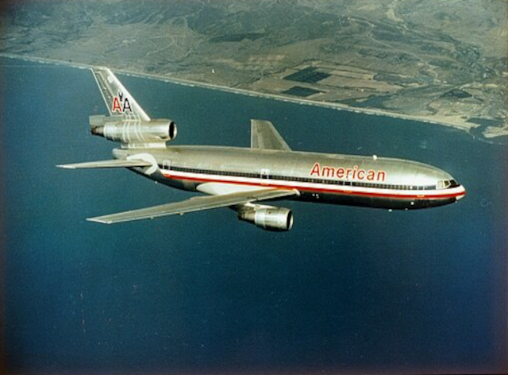
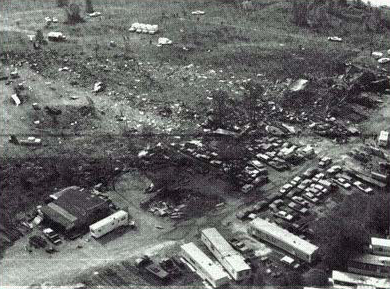
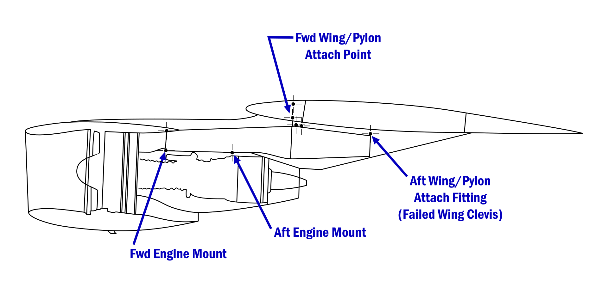

Actual picture of American Airlines Flight 191, photographed by Michael Laughlin
O'Hare international Airport
Prior to the accident
May 25, 1979, was a clear and sunny day in Chicago, bustling with
the activity typical of O’Hare
International Airport, one of the busiest transportation hubs in the world. Flight 191, operated by
American Airlines, was scheduled to depart at 3:00 p.m. for Los Angeles
International Airport. The
aircraft assigned to this journey was a McDonnell Douglas DC-10, an advanced wide-body jetliner popular
in commercial aviation for its capacity and efficiency.

The passengers on Flight 191 were a diverse group. Families, business travelers, and vacationers filled
the seats, their anticipation blending with the hum of airport life. Boarding proceeded smoothly, with
the flight crew greeting passengers with smiles, unaware of the significance this day would hold in
aviation history. Captain Walter Lux, a seasoned pilot with over
22,000 flight hours, was at the
controls, supported by First Officer James Dillard and Flight Engineer
Alfred Udovich, both experienced
and well-trained.
As the clock ticked closer to the scheduled departure time, the DC-10 was cleared to taxi to the runway.
The operations at O’Hare continued like clockwork; the ground crew ensured that luggage was loaded, the
plane refueled, and final checks completed. Passengers settled into their seats, flipping through
in-flight magazines, chatting quietly, or gazing out at the runways bustling with activity.
At 3:02 p.m., the aircraft began its takeoff roll down Runway
32R. The engines roared to life, and the
plane accelerated along the tarmac, heading toward what should have been a routine cross-country flight.
Onboard, there was little to suggest anything unusual as the passengers experienced the familiar
sensation of being pressed back into their seats during takeoff. For a brief moment, the flight lifted
off the ground, beginning its ascent into a clear blue sky.
But just as the aircraft climbed to about 300 feet, something went
terribly wrong.
Crash
Unbeknownst to those on board, the left engine—a massive General
Electric CF6—suddenly tore away from the
wing, flipping over the top of the aircraft before crashing to the ground below. The violent detachment
severed crucial hydraulic lines, disabling critical systems that controlled the wing's
leading-edge
slats. These slats were essential for maintaining lift during takeoff. The pilots, with no way of
knowing the full extent of the damage, found themselves in an increasingly dire situation.
Inside the cabin, chaos erupted. Passengers seated on the left side of the plane likely saw the engine
fall away, while others were jolted by the sudden change in the aircraft’s behavior. Overhead bins
rattled open, oxygen masks dangled uselessly as the cabin filled with confusion and fear.
From the ground, onlookers saw the DC-10 veer to the left. Without the slats on the left wing, the plane
couldn’t maintain lift evenly, causing it to roll dangerously to one side. The pilots fought to regain
control, but the situation was insurmountable.
Within moments, Flight 191 had turned nearly upside down. Witnesses described a horrifying scene: the
massive jet, engines screaming, plummeted nose-first into an open field just north of the airport. The
impact was devastating. A fireball erupted, sending thick black smoke billowing into the sky, visible
for miles around.

Cause
The root cause of the crash was traced to a design flaw in the DC-10's
engine mount. The engine’s pylon,
which was responsible for holding the engine in place, was not adequately reinforced. This
flaw made it
vulnerable to failure under the stress of flight, particularly during takeoff when the aircraft
experiences maximum lift forces.

In particular, the failure of the hydraulic lines that powered the engine controls severed the connection
to the engine, which led to the subsequent separation of the engine and wing. The National
Transportation Safety Board (NTSB) investigation concluded that this failure was the primary cause of
the crash. In addition, the NTSB pointed to inadequate maintenance and inspection procedures, which
allowed the faulty pylon to go unnoticed.
The crash prompted immediate changes in aircraft design, particularly with regard to the DC-10’s engine
mounts. The FAA implemented stricter maintenance standards and required more frequent inspections of the
aircraft's pylon and engine mount systems to prevent similar incidents in the future.
Aftermath
Emergency responders arrived quickly, but there was little they could do. The crash was catastrophic—none
of the 271 people on board survived, and two others on the ground were killed. The field where Flight
191 came to rest was unrecognizable, littered with fragments of the aircraft, personal belongings, and a
trail of destruction that would haunt all who witnessed it.
Investigators from the National Transportation Safety Board (NTSB) arrived soon after, combing through
the wreckage for clues. They discovered that improper maintenance during an earlier engine replacement
had weakened the pylon holding the left engine to the wing. A crack had formed, and during takeoff, the
immense stress proved too much.
Legacy
The crash of Flight 191 remains one of the deadliest in U.S. aviation history. It was a tragic
convergence of human error and mechanical failure, a stark reminder of the importance of rigorous
maintenance and safety protocols. Yet, out of this disaster came significant changes in aviation
practices, ensuring that such an event would be less likely to occur again.
Today, the story of Flight 191 serves as a solemn chapter in the history of flight—a tale of lives lost
but not forgotten, of lessons learned in the harshest way possible, and of the enduring pursuit of safer
skies.
 (1).jpg "O'Hare international Airport")